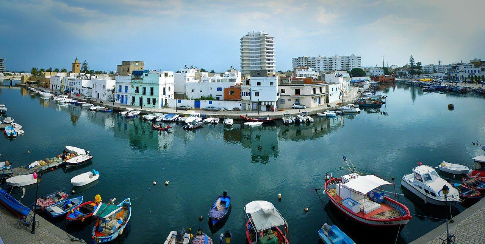
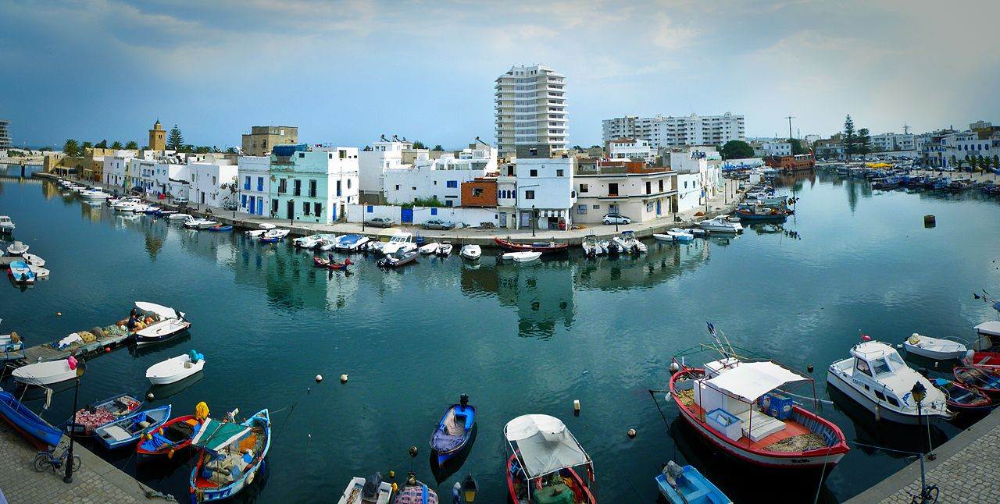
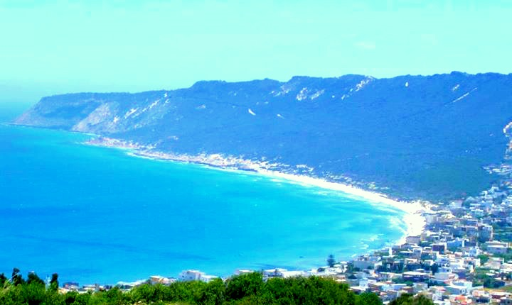
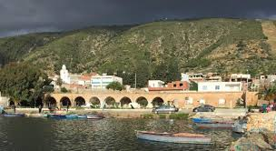

Bizerte
Bizerte est une ville du nord de la Tunisie située entre la mer Méditerranée et le lac de Bizerte. Elle est le chef-lieu d'un gouvernorat peuplé de plus d'un demi-million d'habitants. La ville compte 136 917 habitants en 2014. 


Bizerte est une ville du nord de la Tunisie située entre la mer Méditerranée et le lac de Bizerte. Elle est le chef-lieu d'un gouvernorat peuplé de plus d'un demi-million d'habitants. La ville compte 136 917 habitants en 2014. 
Raf Raf ou Rafraf (رفراف) est une ville du nord-est de la Tunisie située à une soixantaine de kilomètres de Tunis, une quarantaine de kilomètres de Bizerte et à sept kilomètres de Ras Jebel.
La municipalité est rattachée à la délégation de Ras Jebel dans le gouvernorat de Bizerte et compte 9 839 habitants en 2004. Le nombre d'habitants peut doubler l'été avec le retour des émigrés et surtout grâce au dynamisme du tourisme de séjour l'été.

Ghar El Melh (غار الملح), signifiant « grotte du sel » (du fait de la proximité de salines) et anciennement appelé Porto Farina, est une ville côtière du nord-est de la Tunisie. 